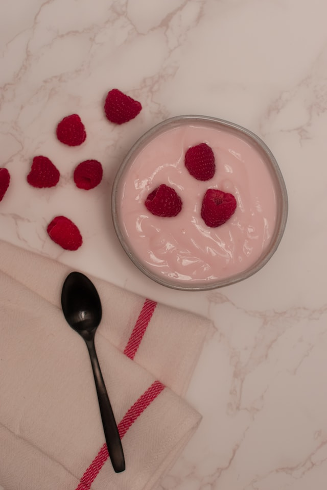

Yogurt

Simple Diet Friendly Yogurt Recipe
Super simple recipe for diet friendly yogurt. You only need 2 ingredients that you might already have. This recipe
is very customizable so go nuts.
Ingredients
- 1 tub of fat free greek yogurt
- 1 drink mix packet
- Mix-ins (optional)
Steps
- Open your fresh tub of yogurt
- Add about half of your drink mix packet to the tub
- Mix well. Be sure to get down in there.
- Taste the yogurt. Add more drink mix to taste.
- Add your mix-ins (if any)
- Serve and enjoy.
Notes
- Using a whole drink mix packet usually does the trick.
- Fruity flavor like strawbery works best, but feel free to use whatever sounds good.
- You can just store your prepared tub in the fridge.
- This genuinely tastes good, I promise.
Back to home